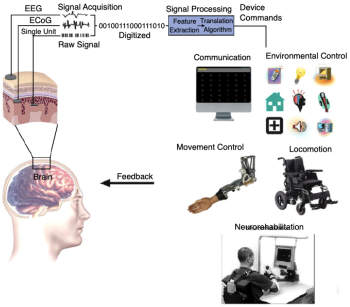
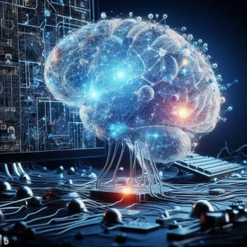

1.4: Applications of Biological Psychology
Biological psychology and related neuroscience fields are highly active areas of research. Billions of dollars are invested annually and tens of thousands of researchers study the brain and behavior. The vast endeavor to understand the brain will help unravel the mysteries of human nature and our human experience. Brain research also has impactful applications—it helps to heal brain damage and psychological disorders and guides the development of artificial intelligence and brain-compatible social policies (Eagleman & Downar, 2016).
Healing the brain. Brain damage and psychological disorders affect tens of millions of people each year. Basic brain science enhances patient care and treatment. Research on cellular and molecular mechanisms in the brain can lead to new drugs, ways to regrow neurons, and increased neural plasticity. Researchers have developed groundbreaking new technology like transcranial magnetic stimulation that stimulates the brain with magnetic pulses and can treat depression, or deep brain stimulation that uses brain implants to treat diseases like Parkinson’s. Brain-computer interfaces pick up brain signals, analyze them, and translate them into commands for devices like wheelchairs or robotic arms. These can help people regain movement who have neuromuscular disorders including amyotrophic lateral sclerosis (ALS), spinal cord injury, or stroke (Figure 4).

Guiding Artificial Intelligence. Neuroscience is intertwined with artificial intelligence (AI). Understanding biological brains is important for building artificial brains and neuroscience has inspired the design of AI systems (Hassabis et al., 2017). Like neurons in the human brain, artificial neural networks have many interconnected units that work in parallel. Neuroscience provided early guidance for AI-system architecture (e.g., units organized in many layers) and algorithms (e.g., a “backpropagation algorithm” that adjusts the connections between units across multiple layers to enable learning). Another example of neuroscience-inspired AI is in attention—until recently artificial neural networks processed an entire image or video frame with equal priority given to all pixels. Conversely, humans focus on one small aspect at a time and strategically shift our “spotlight of attention.” By incorporating a biologically-inspired approach with prioritized focus, AI-image processing improved performance and efficiency (Hassabis et al., 2017).
AI has recently made dramatic advances thanks to breakthroughs in “deep learning” and “reinforcement learning” methods (wherein learning is optimized by reinforcing or rewarding when desired outcomes occur). By incorporating principles from neuroscience, AI researchers have improved the efficiency and accuracy of AI algorithms, resulting in significant advances in areas like computer vision, decision-making, and natural language processing. Popular AI tools for text generation (like ChatGPT, Claude, and LLaMa) and image creation (like Stable Diffusion and DALL-E) are built on principles derived from neuroscience. Finally, advances in AI that were inspired by neuroscience are now being applied back to neuroscience as tools to understand the brain. For example, AI and deep learning approaches can analyze neuroimaging data, build computational models to simulate and study the brain, and predict the trajectory of psychological disorders or diseases like Alzheimer’s (Kreigeskorte & Douglas, 2018; Colliot, 2023).

Brain-compatible social policies. As outlined by Eagleman and Downar (2016), brain science can also have payoffs in guiding brain-compatible social policies. For example, psychology and neuroscience research has implications for how to view and address drug addiction. Advances in psychopharmacology and neuroscience reveal that addiction is driven by brain processes. As a result, policies that attack only drug supply are typically unsuccessful—if one point of supply is busted, another will pop up soon because the demand remains. Instead, policies should focus on attacking the demand for drugs. Treatments rooted in disrupting the brain circuits driving addiction will be more effective than an incarceration-focused approach.
Finally, a large portion of the prison population in the U.S. is mentally ill. The prevalence of serious mental illness in jail inmates is around 15% for men and 31% for women (Steadman et al., 2009). Jails and prisons have become mental health care facilities. For example, the Rikers Island prison is New York’s largest mental institution (Ransom & Harris, 2023), and more mentally ill persons are in jails and prisons than are in hospitals (Torrey et al., 2010). Brain science demonstrates that psychological disorders are rooted in the brain, so one must ask whether policies that support and treat those with mental-health problems might keep them from committing crimes, and whether a treatment approach could be more humane and cost-effective (Eagleman & Downar, 2016).
Media Attributions
- BCI System © MDPI is licensed under a CC BY-NC-SA (Attribution NonCommercial ShareAlike) license
- DALL-E 3 © DALL-E 3 is licensed under a CC BY-NC-SA (Attribution NonCommercial ShareAlike) license